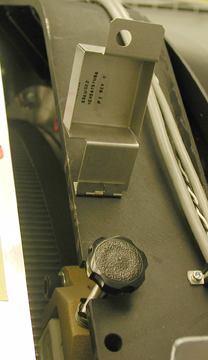
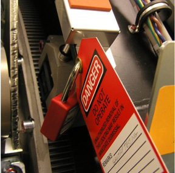
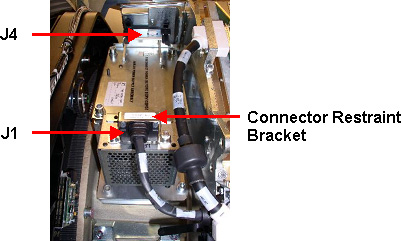
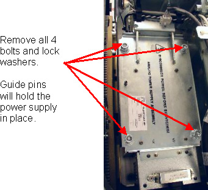
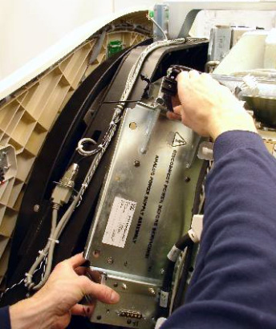
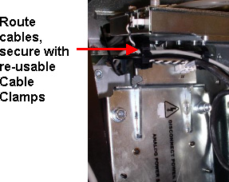

Operating Documentation
Direction 5193891-800, Rev# 5
LightSpeed 5.X Pro16 Limited Access Service Information (Adv)
Operating Documentation |
| Required Persons | Preliminary Reqs | Procedure | Finalization |
|---|---|---|---|
| 1 | Timing Not Applicable | 20 mins | 10 mins |
The ASTEC power supply is mounted on the rotating gantry. Looking through the gantry from the table end, the DAS analog power supply is serviced from the left side of the gantry.
| NOTE: | All left/right orientation in this procedure is based on the viewpoint of an individual looking through the gantry opening from the table end. |
| Last Revised On: | 9 April, 2007 |
| Item | Qty | Effectivity | Part# | Manufacturer | |
|---|---|---|---|---|---|
| Torque Wrench | 1 | - | - | - | |
| Standard FE Toolkit | 1 | - | - | - | |
| 10 mm hex wrench | 1 | - | - | - | |
| Item | Qty | Effectivity | Part# | Manufacturer | |
|---|---|---|---|---|---|
| Astec Power Supply Assembly | 1 | - | - | - | |
| ELECTROCUTION HAZARD | |
| HIGH VOLTAGES PRESENT. | |
| Use proper lockout/tagout procedures before replacing components. See safety menu of Service Document gui for appropriate procedures. |
| CRUSH HAZARD. | |
| UNEXPECTED GANTRY ROTATION CAN CAUSE SERIOUS INJURY. | |
| Never service the gantry with the axial drive enabled. Use the gantry rotation lock to lock out gantry rotation. See safety menu of Service Document gui for appropriate procedures. |
| Potential for injury to service personnel. | |
| Each power supply chassis weighs just under 30 pounds. | |
| Depending on your height, a step stool may be required to reach over the TGP for supply removal/installation. Use your judgment to determine if a second person may be required to assist in removal and installation. |
| Burn injury possible. | |
| Power supply may be hot to touch | |
| Use caution to prevent possible burn injury from hot surface contact. |
| Follow ALL required safety and PPE procedures customary for your organization, when working on this product. | |
| Condition | Reference | Eff |
|---|---|---|
Only trained service personnel should service the GE CT Scanner. | - | - |
Position the table so it is out of the way.
Remove gantry side covers.
Refer to Parts Replacement → Gantry → Enclosure → Cover Removal.
| ELECTROCUTION HAZARD | |
| HIGH VOLTAGES PRESENT. | |
| Use proper lockout/tagout procedures before replacing components. See safety menu of Service Document gui for appropriate procedures. |
From the right side of the gantry, turn off the Axial Drive, HVDC, and 120VAC Switches.
Remove the top covers.
Unplug the top cover fans.
Remove both top covers.
Rotate the gantry to access the Astec analog power supply from the left side (same side as TGP).
Use the Index Lock to lock the gantry.
See Illustration 1 and Illustration 2.
Illustration 1: Gantry Rotational Lock

Illustration 2: Gantry Rotational Lock - Locked and Tagged

If necessary, loosen the reusable Cable Clamps where found.
Remove the connector restraint bracket over the J1 Connector.
Disconnect cables to J1 and J4.
See Illustration 3.
Illustration 3: Connector Removal

| Burn injury possible. | |
| Power supply may be hot to touch | |
| Use caution to prevent possible burn injury from hot surface contact. |
Remove the four (4) bolts and lock washers as shown in Illustration 4.
Illustration 4: Remove 4 Bolts and Lockwashers

Remove the power supply assembly from the gantry.
See Illustration 5.
Illustration 5: Astec GE Analog Power Supply Removal

Insert the new power supply. Take advantage of the guide pins on the rotating base to hold the new power supply in position.
| NOTE: | Do not use Loctite compound on these bolts. |
Use the new bolts and lock washers provided. Tighten all four (4) bolts to the specified torque setting shown in Table 1.
Table 1: Torque Values
| 66.4 N-m | 49 lb-ft | 588 lb-in | 677 kg-cm |
| NOTE: | The connector thumbscrews of the ASTEC Analog power supply and backplane connector harnesses WILL BREAK very easily if using a large diameter handle screwdriver. A gentle hand torque using a small diameter handle screwdriver is recommended. |
Reconnect J1 and J5.
Reroute any cables back through the removable cable clamps and tighten them.
Illustration 6: Reroute Cables and Tighten Reusable Cable Clamps

| Possible Equipment Damage. Service Action required the removal of either rotating or stationary gantry sub-assemblies. Make sure that the gantry freely rotates, without interference. | |
Remove the Index Lock and all safety equipment.
MANUALLY rotate the gantry several times while inspecting the power supply to make sure that all cables and other hardware removed are properly secured to the rotating side of the gantry, and are not interfering with rotation.
From the right side of the gantry, turn ON the Axial Drive, HVDC, and 120VAC switches.
Replace the top covers and connect the top cover fans.
| POTENTIAL FOR ELECTRIC SHOCK. | |
| VOLTAGE IS PRESENT. | |
| Failure to use an insulated voltage adjustment “Tweaker” can result in personal injury and/or component damage. |
Adjust 5V supply's output. Refer to GDAS Power Supply Adjustment procedure.
Replace the side covers.
| NOTE: | Rebalancing the gantry is not required. |
Perform a basic scan to ensure the system is functioning normally.